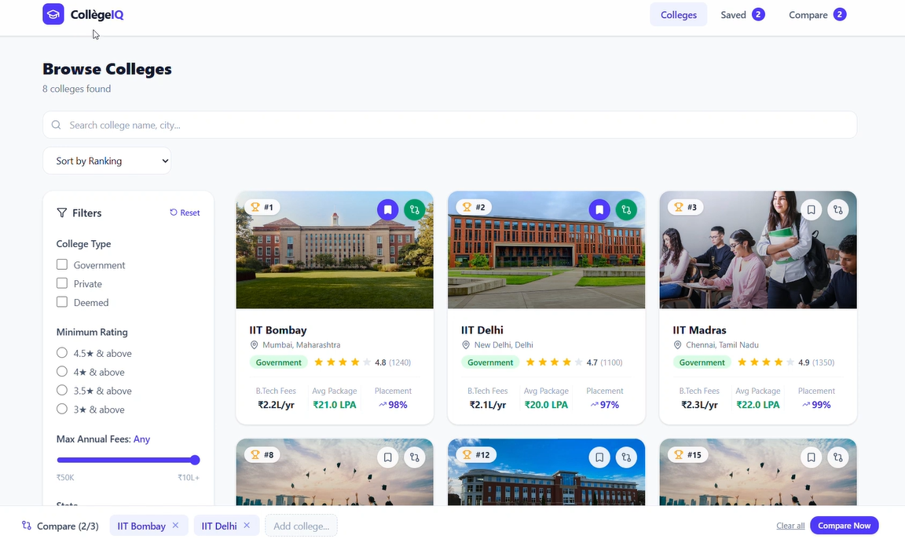
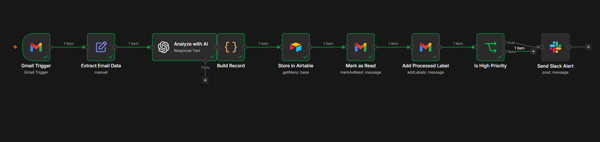
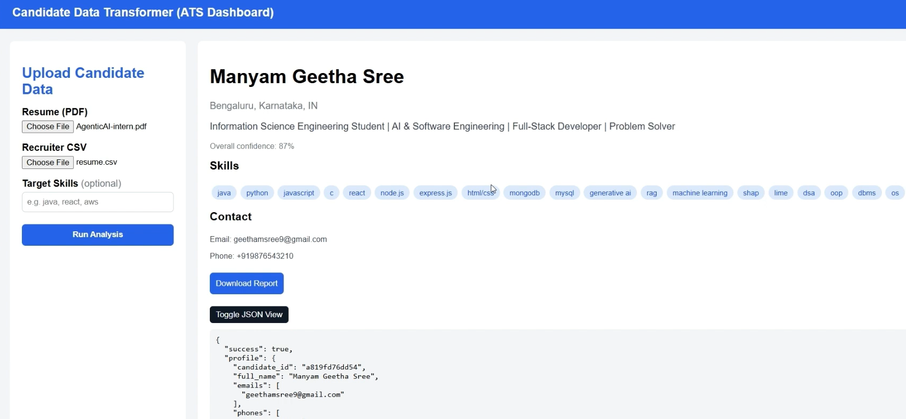
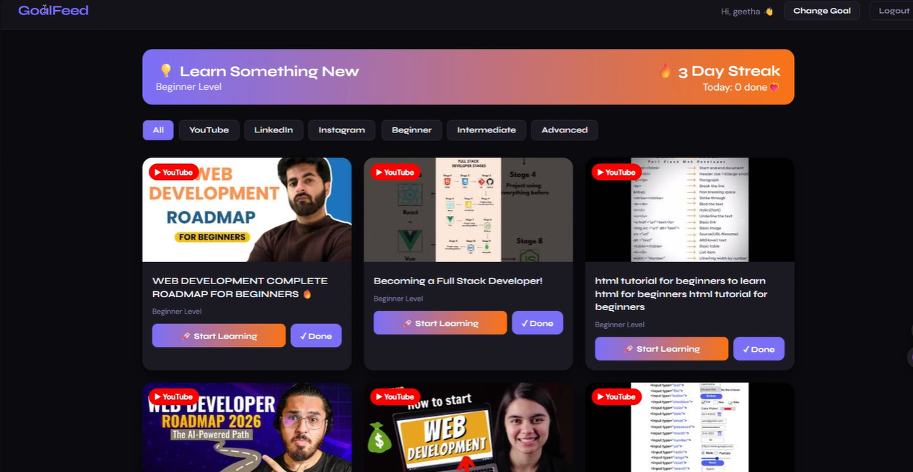

Projects Log
Production-oriented architectures and web platforms built across local systems.

1. CollegeIQ – Discovery Platform
Built a responsive web application that helps students explore, filter, compare, and save colleges based on rankings, ratings, fees, and placement statistics. Designed an intuitive UI to simplify the college selection process.

2. AI-Powered Email Automation
Developed an AI-powered email automation workflow using n8n that automatically extracts email details, analyzes content with AI, stores records in Airtable, labels processed emails, and sends Slack alerts for high-priority messages.

3. Candidate Data Transformer
Developed an ATS-inspired dashboard that extracts and organizes candidate information from resumes, analyzes skills, and generates a structured profile with downloadable reports for recruiters.

4. GoalFeed – Learning Platform
Built a personalized learning platform that recommends curated learning resources based on users' goals and skill levels. Users can track their learning progress, maintain streaks, and access educational content.